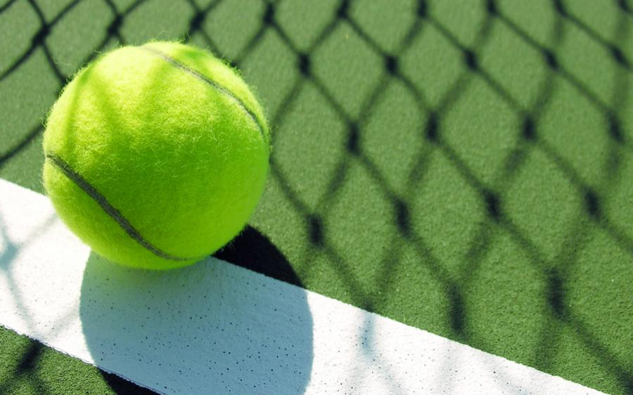
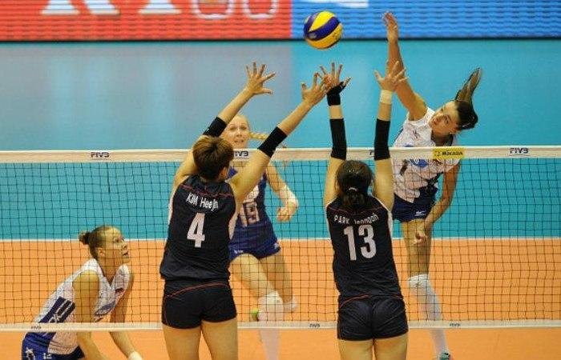
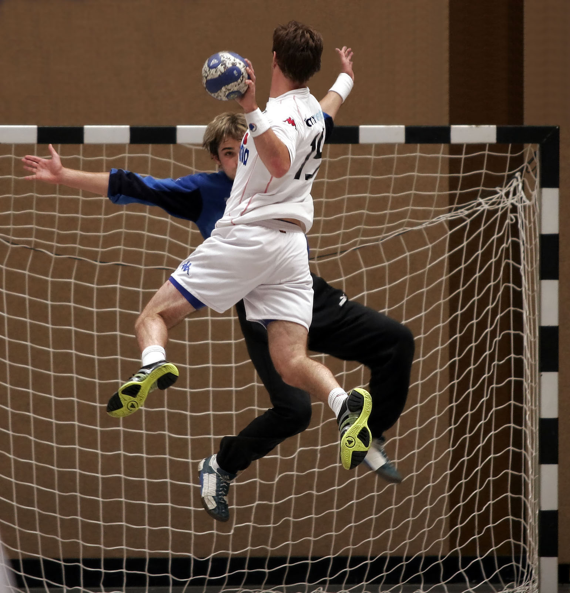
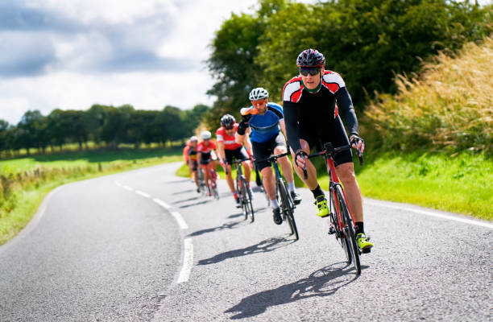
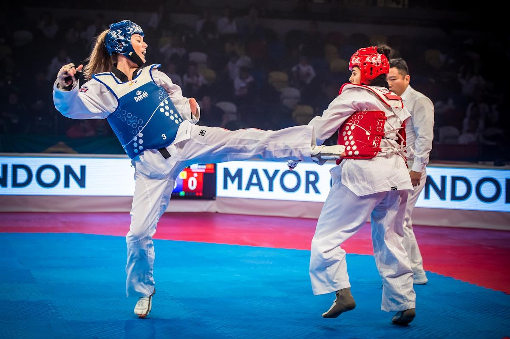
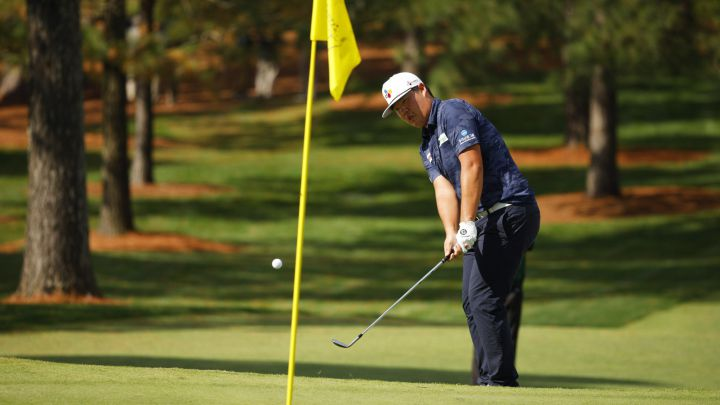

Baloncesto
El baloncesto, también conocido como básquetbol, basquetbol o simplemente básquet, es un deporte de equipo, jugado entre dos conjuntos de cinco jugadores cada uno durante cuatro períodos o cuartos de diez minutos cada uno doce minutos cada cuarto en la NBA

Fútbol
El fútbol o futbol es un deporte de equipo jugado entre dos conjuntos de once jugadores cada uno mientras los árbitros se ocupan de que las normas se cumplan correctamente. Es ampliamente considerado el deporte más popular del mundo, pues lo practican unas 270 millones de personas.

Tenis
El tenis, también llamado tenis de campo, es un deporte de raqueta practicado sobre una pista rectangular, delimitada por líneas y dividida por una red. Se disputa entre dos jugadores o entre dos parejas

Voleibol
El voleibol, vóleibol, volibol, vólibol, balonvolea o simplemente vóley, es un deporte que se juega con una pelota y en el que dos equipos, integrados por seis jugadores cada uno, se enfrentan sobre un área de juego separada por una red central.

Atletismo
El atletismo es considerado el deporte organizado más antiguo del mundo. Abarca numerosas disciplinas agrupadas en carreras, saltos, lanzamientos y pruebas variadas. El atletismo es el arte de superar a los adversarios en velocidad o en resistencia llamado también fondo, en distancia o en mayor altura

Boxeo
Deporte de combate en el que dos personas de la misma categoría de peso luchan entre sí golpeándose con los puños, empleando para ello unos guantes especiales y siguiendo unas reglas específicas; se practica sobre un ring o cuadrilátero durante un número determinado de asaltos, generalmente de tres minutos de duración; gana el boxeador que consigue noquear al adversario o, si esto no ocurre, aquel que deciden los jueces.

Natación
La natación es un deporte que consiste en el desplazamiento de una persona en el agua, sin que esta toque el suelo.Es regulado por la Federación Internacional de Natación

Balonmano
El balonmano, hándbol o handball, es un deporte de pelota en el que se enfrentan dos equipos y se caracteriza por transportar la pelota con las manos.

Ciclismo
Deporte o ejercicio que se practica en bicicleta y que engloba diversas modalidades, como las de carretera, montaña y pista; en las pruebas ciclistas se compite en velocidad, habilidad o resistencia.

Taekwondo
Sistema de combate sin armas, de origen coreano, hoy principalmente deporte, en que dos contendientes utilizan golpes secos dados con los puños y con los pies y en el que se han desarrollado las técnicas de salto; los combates constan de tres períodos de dos minutos cada uno.

Golf
Deporte individual en el que el objetivo es, utilizando diversos palos o bastones, introducir una pelota pequeña y dura en cada uno de los 18 hoyos que se encuentran en un extenso campo de césped al aire libre; gana el jugador que completa el recorrido salvando los obstáculos con un menor número de golpes.

Ping pong
Deporte o juego de mesa que se practica entre dos jugadores o dos parejas sobre una mesa rectangular dividida transversalmente por una red; la pelota es pequeña, hueca y ligera, y se golpea con una pequeña pala de madera; los partidos se disputan a tres o cinco juegos de 21 puntos.